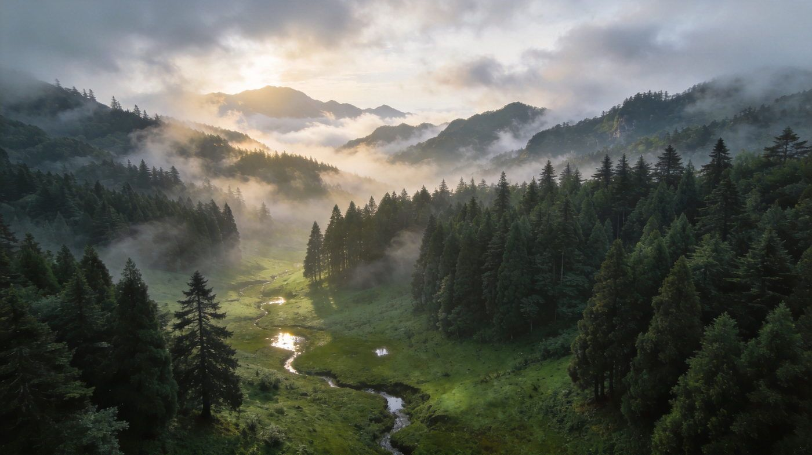
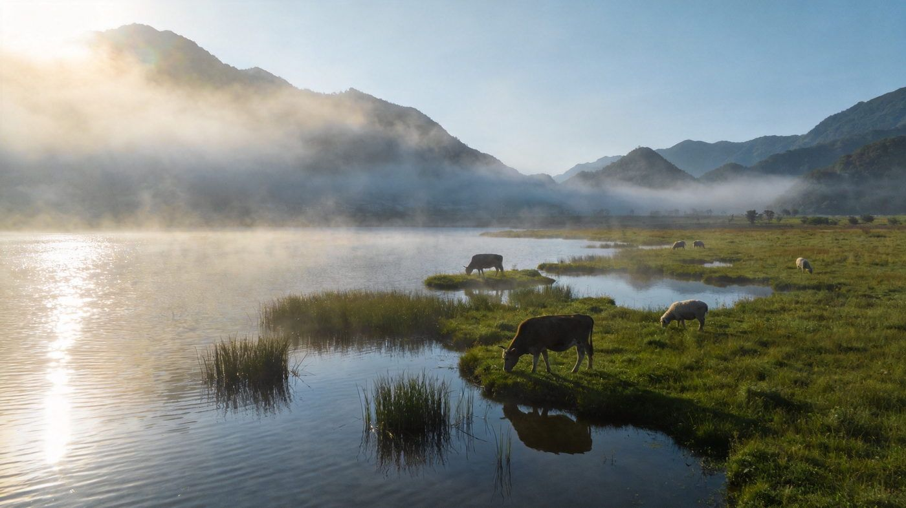
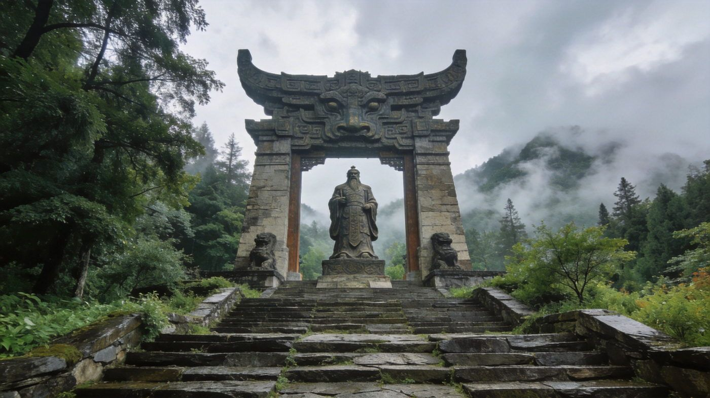

神农顶片区
神农顶 · 华中屋脊原始秘境
最高峰海拔约 3105 米，森林覆盖率极高，山间云雾缭绕、原始杉林莽莽，是湖北海拔制高点，也是野人传说最集中的区域。
👍 必去理由：核心必看。神农谷、板壁岩怪石与高山草甸很震撼；海拔高温差大，务必带防风外套，雨后易起雾能见度低。
配图：原创生成 · 无版权风险
世界自然遗产 + 华中屋脊，原始森林、高山湿地、野人传说兼备。核心看点：大九湖湿地、神农顶、官门山、天生桥。求快走 2 天核心版，想深度走 3 天版。适合 1–3 人，含行程 / 住宿 / 美食 / 预算 / 出行方式对比。
核心策略：D1 大九湖看晨雾湿地，D2 神农顶登华中屋脊，精华全部覆盖。
在核心版基础上补官门山（科学博物馆+熊猫）与天生桥（喀斯特天生桥瀑布），节奏更松。
把神农架最有辨识度的 3 个点单独拎出来说清楚——值不值得去、怎么玩。

最高峰海拔约 3105 米，森林覆盖率极高，山间云雾缭绕、原始杉林莽莽，是湖北海拔制高点，也是野人传说最集中的区域。
👍 必去理由：核心必看。神农谷、板壁岩怪石与高山草甸很震撼；海拔高温差大，务必带防风外套，雨后易起雾能见度低。
配图：原创生成 · 无版权风险

九个高山平原湖泊串珠而成的高原湿地，晨雾弥漫、水草浅滩、牛羊漫步，是摄影与慢行胜地，宛如湖北版「小呼伦贝尔」。
👍 必去理由：必打卡。需乘景区大巴进入（私家车不能直达湖边），清晨 6–7 点晨雾最梦幻；门票约 100 元 + 景交费。沿湖栈道徒步观鸟超治愈。
配图：原创生成 · 无版权风险

为祭祀炎帝神农氏而建的景区，高高的祭坛与神农氏立像、层叠石阶庄严肃穆，四周古树环绕、云雾缭绕时颇似仙境，是了解神农架文化内核的点。
👍 必去理由：可与官门山串联（得不远），半天足够；看神农像俯瞰全景和古杉，配合讲解更有味道。
配图：原创生成 · 无版权风险
神农架是大景区群，怎么走影响体验。下面把三种方式讲透。
| 维度 | 🚗 自驾 | 🚙 包车 | 🚌 跟团 |
|---|---|---|---|
| 核心体验 | 时间自由、追晨雾/晚霞灵活，可在神农顶等点位自由停留 | 司机熟路到点放行，同样自由，免去自己开连续山路弯道 | 行程固定、省心省力，有讲解，但节奏偏赶 |
| 适合有山路驾驶经验、享受开车的游客 | 适合不想开山路的 2–3 人团 | 适合带长辈小孩、图省心的游客 | |
| ✔ 自由度最高 | ✔ 免山路压力、可拼车分摊 | ✔ 全程安排讲解 | |
| 费用参考 | 2 天租车+油费约 600–1000 元/车 | 包车约 600–900 元/天（含司机） | 人均约 900–1500 元起 |
| ✔ 3 人拼车人均最省 | ✘ 人少时人均偏高 | ✘ 可能有自费/购物、节奏紧 | |
| 💡 一句话建议：有山路经验且 2–3 人 → 自驾；不想开山路想自由 → 包车；带老人小孩图省心 → 跟团。 | |||
三档价位，均为 2 人房计。
土家高山风味 + 山珍，木鱼镇餐馆都能尝到。
区间为保守–宽松，实际以淡旺季与选择为准。
| 项目 | 2天核心版 | 3天深度版 |
|---|---|---|
| 大交通（往返） | 约 200–400 | 约 200–400 |
| 住宿 | 1 晚 60–175 | 2 晚 180–350 |
| 餐饮 | 约 150–250 | 约 220–350 |
| 门票+景交（大九湖/神农顶等） | 约 200–320 | 约 320–500 |
| 交通/租车（人均分摊） | 约 200–350 | 约 350–500 |
| 合计 · 人均 | 约 900–1400 | 约 1400–2000 |